Design kit · směr B „Odpovědní list“ · verze 1.0
exam-test v novém designu
Logo, brand manuál, knihovna komponent a 113 navržených stránek webu i aplikace – jako hotové HTML a CSS pro kodéra. Každá stránka má specifikaci a je zkontrolovaná na WCAG 2.2 AA, pravidla značky a srozumitelnost textů.
Pro kodéra
Každá stránka = web/…, app/…, tisk/…. Styly jen z assets/brand.css a tokenů. Zdroje stránek v src/, kostra v tools/build.py.
Specifikace
U každé stránky: účel, hlavní akce, stavy, změny UX, přepisy textů (dnes → nově → proč) a řešení přístupnosti. V auditu nebo v <script id="spec"> stránky.
Kontrola
Příkaz npm run check -- app/testy.html spustí axe-core (WCAG 2.2 AA). Hlídá i reflow na 320 px, velikost cílů, typografii, barvy, délku vět a zakázané formulace.
Všechny stránky
Veřejný web


 Pro školy, kurzy a střediska/pro-vzdelavaniveřejnostBez chybSpecifikace: Pro školy, kurzy a střediska (web/pro-vzdelavani.html)
Pro školy, kurzy a střediska/pro-vzdelavaniveřejnostBez chybSpecifikace: Pro školy, kurzy a střediska (web/pro-vzdelavani.html)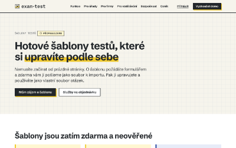
Šablony testů a služby/sablony-testuveřejnostBez chybSpecifikace: Šablony testů a služby (web/sablony-testu.html)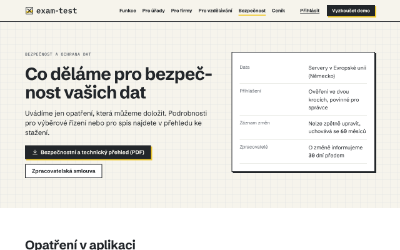
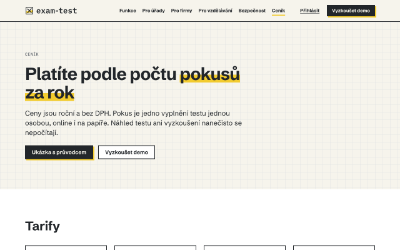
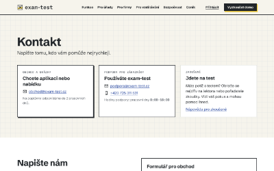
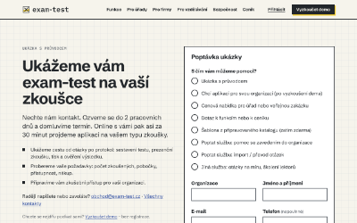
Ukázka s průvodcem – poptávka/ukazka (dnes /demo)veřejnostBez chybSpecifikace: Ukázka s průvodcem – poptávka (web/ukazka.html)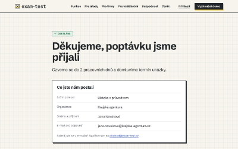
Poptávka odeslána/ukazka/odeslanoveřejnostBez chybSpecifikace: Poptávka odeslána (web/ukazka-odeslano.html)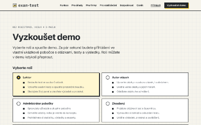
Vyzkoušet demo – výběr role/vyzkousetveřejnostBez chybSpecifikace: Vyzkoušet demo – výběr role (web/vyzkouset.html)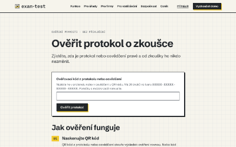
Ověření protokolu – formulář/overeniveřejnostBez chybSpecifikace: Ověření protokolu – formulář (web/overeni.html)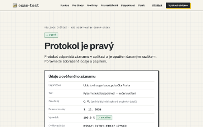
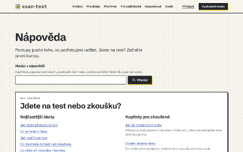
Nápověda – rozcestník (veřejná)/napovedaveřejnostBez chybSpecifikace: Nápověda – rozcestník (veřejná) (web/napoveda.html)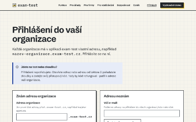
Najít organizaci / přihlášení/platforma/najit-organizaciveřejnostBez chybSpecifikace: Najít organizaci / přihlášení (web/najit-organizaci.html)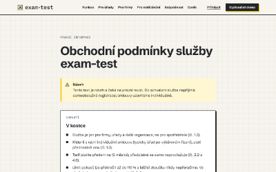
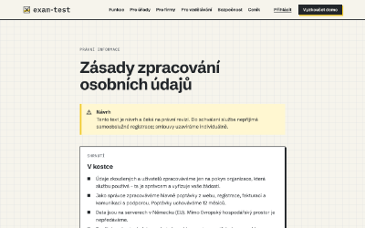
Ochrana osobních údajů a cookies/ochrana-osobnich-udajuveřejnost1 chybSpecifikace: Ochrana osobních údajů a cookies (web/ochrana-osobnich-udaju.html)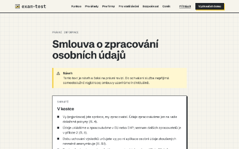
Zpracovatelská smlouva/zpracovatelska-smlouvaveřejnostBez chybSpecifikace: Zpracovatelská smlouva (web/zpracovatelska-smlouva.html)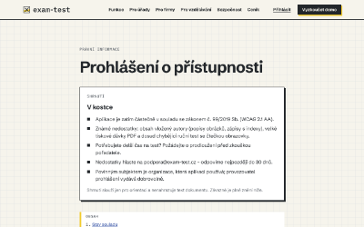
Prohlášení o přístupnosti/prohlaseni-o-pristupnostiveřejnostBez chybSpecifikace: Prohlášení o přístupnosti (web/prohlaseni-o-pristupnosti.html)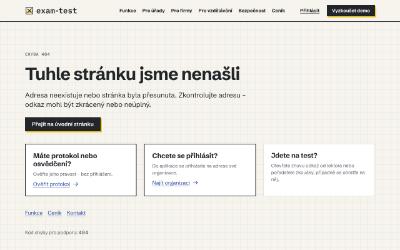
Aplikace · přihlášení, přehledy, otázky

 Ověření ve dvou krocích/prihlaseni/overenivšichniBez chybSpecifikace: Ověření ve dvou krocích (app/prihlaseni-2fa.html)
Ověření ve dvou krocích/prihlaseni/overenivšichniBez chybSpecifikace: Ověření ve dvou krocích (app/prihlaseni-2fa.html) Přihlášení odkazem z e-mailu/prihlaseni/odkazvšichniBez chybSpecifikace: Přihlášení odkazem z e-mailu (app/prihlaseni-odkaz.html)
Přihlášení odkazem z e-mailu/prihlaseni/odkazvšichniBez chybSpecifikace: Přihlášení odkazem z e-mailu (app/prihlaseni-odkaz.html)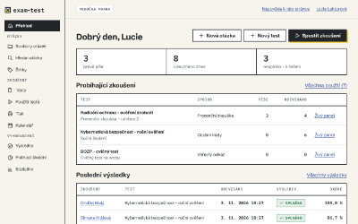
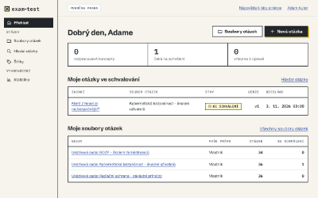
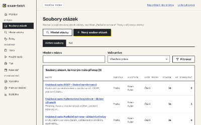
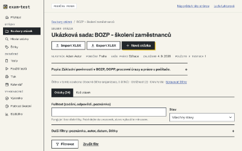
Soubor otázek – detail/soubory/:idlektorBez chybSpecifikace: Soubor otázek – detail (app/soubor-detail.html)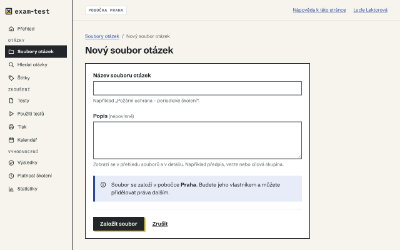
Nový / upravit soubor otázek/soubory/novy, /soubory/:id/upravitlektorBez chybSpecifikace: Nový / upravit soubor otázek (app/soubor-formular.html)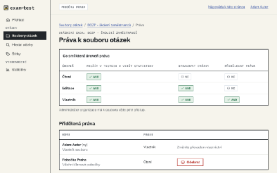
Práva k souboru otázek/soubory/:id/pravalektorBez chybSpecifikace: Práva k souboru otázek (app/soubor-prava.html)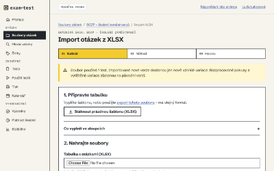
Import otázek z XLSX/soubory/:id/importlektorBez chybSpecifikace: Import otázek z XLSX (app/soubor-import.html)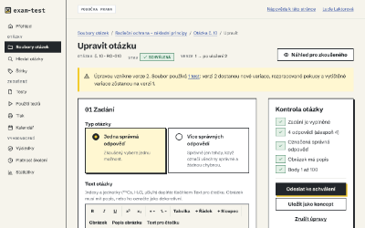
Editor otázky/otazky/nova, /otazky/:id/upravitlektorBez chybSpecifikace: Editor otázky (app/otazka-editor.html)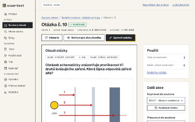
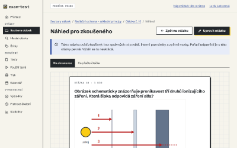
Náhled otázky pro zkoušeného/otazky/:id/nahledlektorBez chybSpecifikace: Náhled otázky pro zkoušeného (app/otazka-nahled.html)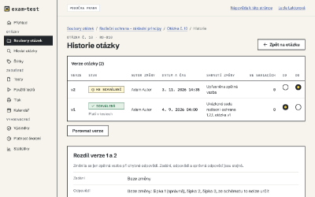
Historie verzí otázky/otazky/:id/historielektorBez chybSpecifikace: Historie verzí otázky (app/otazka-historie.html)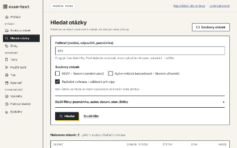
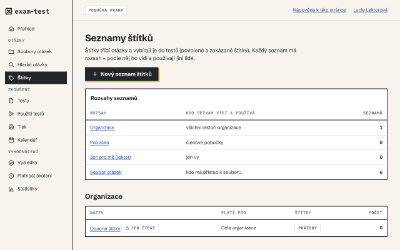
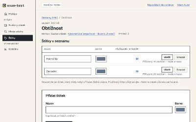
Seznam štítků – detail/stitky/:idlektorBez chybSpecifikace: Seznam štítků – detail (app/stitky-detail.html)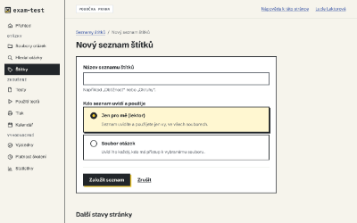
Nový seznam štítků/stitky/novylektorBez chybSpecifikace: Nový seznam štítků (app/stitky-formular.html)
Aplikace · testy, zadání, tisk, kalendář
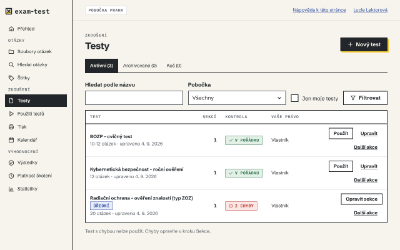
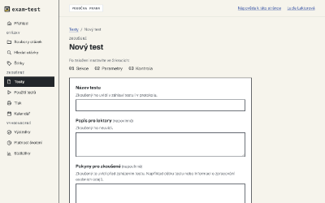
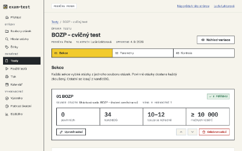
Editor testu – 1 Sekce/testy/:id/upravit/sekcelektorBez chybSpecifikace: Editor testu – 1 Sekce (app/test-editor-sekce.html)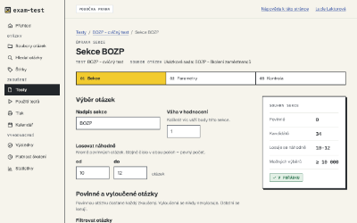
Sekce testu – výběr otázek/testy/:id/sekce/:idlektorBez chybSpecifikace: Sekce testu – výběr otázek (app/test-sekce-detail.html)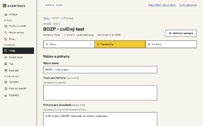
Editor testu – 2 Parametry/testy/:id/upravit/parametrylektorBez chybSpecifikace: Editor testu – 2 Parametry (app/test-editor-parametry.html)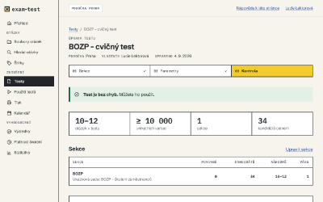
Editor testu – 3 Kontrola/testy/:id/upravit/kontrolalektorBez chybSpecifikace: Editor testu – 3 Kontrola (app/test-editor-kontrola.html)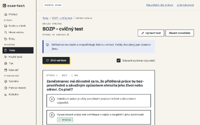
Náhled variace / nanečisto/testy/:id/nahledlektorBez chybSpecifikace: Náhled variace / nanečisto (app/test-nahled.html)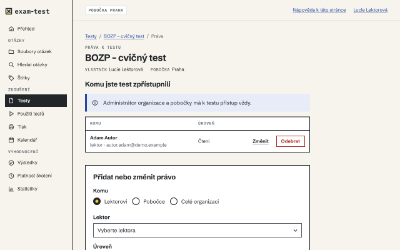
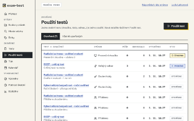
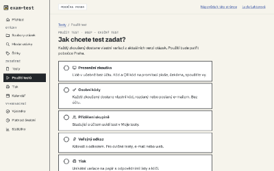
Použít test – výběr způsobu/pouziti/novelektorBez chybSpecifikace: Použít test – výběr způsobu (app/pouziti-nove.html)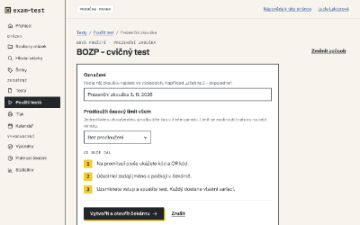
Nové použití – prezenční zkouška/pouziti/nove?typ=LIVElektorBez chybSpecifikace: Nové použití – prezenční zkouška (app/pouziti-prezencni.html)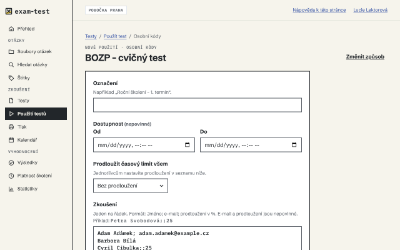
Nové použití – osobní kódy/pouziti/nove?typ=CODElektorBez chybSpecifikace: Nové použití – osobní kódy (app/pouziti-kody.html)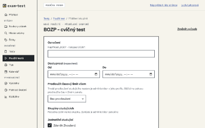
Nové použití – přidělení/pouziti/nove?typ=ASSIGNMENTlektorBez chybSpecifikace: Nové použití – přidělení (app/pouziti-prideleni.html)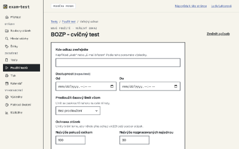
Nové použití – veřejný odkaz/pouziti/nove?typ=LINKlektorBez chybSpecifikace: Nové použití – veřejný odkaz (app/pouziti-odkaz.html)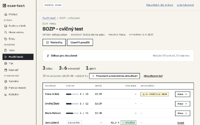
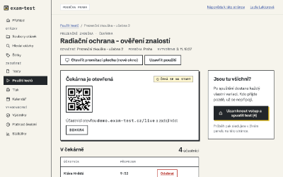
Prezenční zkouška – čekárna (lektor)/pouziti/:id (čekárna)lektorBez chybSpecifikace: Prezenční zkouška – čekárna (lektor) (app/cekarna-lektor.html)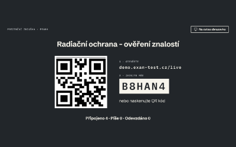
Promítací plocha/pouziti/:id/plochalektorBez chybSpecifikace: Promítací plocha (app/promitaci-plocha.html)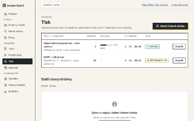
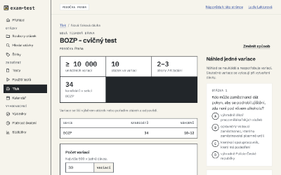
Nová tisková dávka/pouziti/nove?typ=PRINTlektorBez chybSpecifikace: Nová tisková dávka (app/tisk-nova-davka.html)- Tisková dávka – detail/tisk/:idlektorBez chybSpecifikace: Tisková dávka – detail (app/tisk-davka.html)
- Zápis papírových odpovědí/tisk/:id/papirove-odpovedilektorBez chybSpecifikace: Zápis papírových odpovědí (app/tisk-zapis.html)
- Termín zkoušky – formulář/kalendar/novy, /kalendar/:id/upravitlektorBez chybSpecifikace: Termín zkoušky – formulář (app/kalendar-termin.html)
Aplikace · výsledky, statistiky, správa, účet, nápověda

 Výsledky – prezenční zkoušky/vysledky/prezencnilektorBez chybSpecifikace: Výsledky – prezenční zkoušky (app/vysledky-prezencni.html)
Výsledky – prezenční zkoušky/vysledky/prezencnilektorBez chybSpecifikace: Výsledky – prezenční zkoušky (app/vysledky-prezencni.html) Výsledky – přidělené testy/vysledky/pridelenelektorBez chybSpecifikace: Výsledky – přidělené testy (app/vysledky-pridelene.html)
Výsledky – přidělené testy/vysledky/pridelenelektorBez chybSpecifikace: Výsledky – přidělené testy (app/vysledky-pridelene.html) Přidělený test – kdo splnil/vysledky/pridelene/:idlektorBez chybSpecifikace: Přidělený test – kdo splnil (app/vysledky-pridelene-detail.html)
Přidělený test – kdo splnil/vysledky/pridelene/:idlektorBez chybSpecifikace: Přidělený test – kdo splnil (app/vysledky-pridelene-detail.html)
- Platnost školení/vysledky/platnost-skolenilektorBez chybSpecifikace: Platnost školení (app/platnost-skoleni.html)
- Statistiky testu/statistiky/test/:idlektorBez chybSpecifikace: Statistiky testu (app/statistiky-test.html)
- Statistiky souboru otázek/statistiky/soubor/:idlektorBez chybSpecifikace: Statistiky souboru otázek (app/statistiky-soubor.html)
- Statistiky otázky/statistiky/otazka/:idlektorBez chybSpecifikace: Statistiky otázky (app/statistiky-otazka.html)
- Otázky ke schválení/ke-schvaleniadminBez chybSpecifikace: Otázky ke schválení (app/ke-schvaleni.html)
- Schválení otázky/otazky/:id/schvalitadminBez chybSpecifikace: Schválení otázky (app/otazka-schvalit.html)
- Uživatel – detail/sprava/uzivatele/:idadminBez chybSpecifikace: Uživatel – detail (app/uzivatel-detail.html)
- Pozvat / upravit uživatele/sprava/uzivatele/novy, /:id/upravitadminBez chybSpecifikace: Pozvat / upravit uživatele (app/uzivatel-formular.html)
- Nová skupina studujících/sprava/skupiny/novaadminBez chybSpecifikace: Nová skupina studujících (app/skupina-formular.html)
- Prohlášení o přístupnosti (v aplikaci)/prohlaseni-o-pristupnostilektorBez chybSpecifikace: Prohlášení o přístupnosti (v aplikaci) (app/prohlaseni-o-pristupnosti.html)
- Informace o zpracování osobních údajů/informace-o-zpracovanilektorBez chybSpecifikace: Informace o zpracování osobních údajů (app/informace-o-zpracovani.html)
- Schránka dema – e-mail/schranka-dema/:idlektorBez chybSpecifikace: Schránka dema – e-mail (app/schranka-email.html)
Zkoušený, e-mail a tiskové dokumenty
- Čekárna – zkoušený/live/:kodzkousenyBez chybSpecifikace: Čekárna – zkoušený (app/cekarna-zkouseny.html)
 Otázka (jedna správná)/t/:idzkousenyBez chybSpecifikace: Otázka (jedna správná) (app/test-otazka.html)
Otázka (jedna správná)/t/:idzkousenyBez chybSpecifikace: Otázka (jedna správná) (app/test-otazka.html) Otázka (více správných, s obrázkem)/t/:id (více odpovědí)zkousenyBez chybSpecifikace: Otázka (více správných, s obrázkem) (app/test-otazka-vice.html)
Otázka (více správných, s obrázkem)/t/:id (více odpovědí)zkousenyBez chybSpecifikace: Otázka (více správných, s obrázkem) (app/test-otazka-vice.html)- Otázka – výpadek připojení/t/:id (offline)zkousenyBez chybSpecifikace: Otázka – výpadek připojení (app/test-vypadek.html)
- Převzetí na jiném počítači/t/prevzetizkousenyBez chybSpecifikace: Převzetí na jiném počítači (app/test-prevzeti.html)
- Odevzdání testu/t/:id/odevzdatzkousenyBez chybSpecifikace: Odevzdání testu (app/test-odevzdani.html)
- Odpovědní list (A4)(PDF)veřejnostBez chybSpecifikace: Odpovědní list (A4) (tisk/odpovedni-list.html)
- Protokol o výsledku (A4)(PDF)veřejnostBez chybSpecifikace: Protokol o výsledku (A4) (tisk/protokol.html)
Angličtina – vzorové stránky
- Homepage – English (vzor)/en/veřejnostBez chybSpecifikace: Homepage – English (vzor) (web/en-index.html)
- Question – English (vzor)/t/:id (en)zkousenyBez chybSpecifikace: Question – English (vzor) (app/en-test-otazka.html)